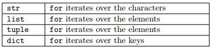
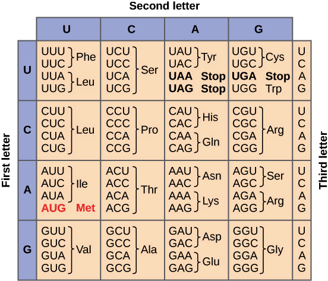

Module 1, Practical 4¶
In this practical we will work with conditionals (branching) and loops.
Execution flow¶
Recall from the lecture that there are at least three types of execution flows. Our statements can be simple and structured sequentially, when one instruction is executed right after the previous one, but some more complex flows involve conditional branching (when the portion of the code to be executed depends on the value of some condition), or loops when a portion of the code is executed multiple times until a certain condition becomes False.

These portions of code are generally called blocks and Python, unlike most of the programming languages, uses indentation (and some keywords like else, ‘:’, ‘next’, etc.) to define blocks.
Conditionals¶
We can use conditionals any time a decision needs to be made depending on the value of some condition. A block of code will be executed if the condition is evaluated to the boolean True and another one if the condition is evaluated to False.
The basic if - else statement¶
The basic syntax of conditionals is an if statement like:
if condition :
#This is the True branch
#do something
else:
#This is the False branch (or else branch)
#do something else
where condition is a boolean expression that tells the interpreter which of the two blocks should be executed. If and only if the condition is True the first branch is executed, otherwise execution goes to the second branch (i.e. the else branch). Note that the condition is followed by a “:” character and that the two branches are indented. This is the way Python uses to identify the block of instructions that belong to the same branch. The else keyword is followed by “:” and is not indented (i.e. it is at the same level of the if statement. There is no keyword at the end of the “else branch”, but indentation tells when the block of code is finished.
Example: Let’s get an integer from the user and test if it is even or odd, printing the result to the screen.
[1]:
num = int(input("Dear user give me an integer:"))
res = ""
if num % 2 == 0:
#The number is even
res = "even"
else:
#The number is odd
res = "odd"
print("Number ", num, " is ", res)
Dear user give me an integer:27
Number 27 is odd
Note that the execution is sequential until the if keyword, then it branches until the indentation goes back to the same level of the if (i.e. the two branches rejoin at the print statement in the final line). Remember that the else branch is optional.
The if - elif - else statement¶
If statements can be chained in such a way that there are more than two possible branches to be followed. Chaining them with the if - elif - else statement will make execution follow only one of the possible paths.
The syntax is the following:
if condition :
#This is branch 1
#do something
elif condition1 :
#This is branch 2
#do something
elif condition2 :
#This is branch 3
#do something
else:
#else branch. Executed if all other conditions are false
#do something else
Note that branch 1 is executed if condition is True, branch 2 if and only if condition is False and condition1 is True, branch 3 if condition is False, condition 1 is False and condition2 is True. If all conditions are False the else branch is executed.
Example: The tax rate of a salary depends on the income. If the income is < 10000 euros, no tax is due, if the income is between 10000 euros and 20000 the tax rate is 25%, if between 20000 and 45000 it is 35% otherwise it is 40%. What is the tax due by a person earning 35000 euros per year?
[2]:
income = 35000
rate = 0.0
if income < 10000:
rate = 0
elif income < 20000:
rate = 0.25
elif income < 45000:
rate = 0.35
else:
rate = 0.4
tax = income*rate
print("The tax due is ", tax, " euros (i.e ", rate*100, "%)")
The tax due is 12250.0 euros (i.e 35.0 %)
Note the difference in the two following cases:
[3]:
#Example 1
val = 10
if val > 5:
print("Value >5")
elif val > 5:
print("I said value is >5!")
else:
print("Value is <= 5")
#Example 2
val = 10
if(val > 5):
print("\n\nValue is >5")
if(val > 5):
print("I said Value is >5!!!")
Value >5
Value is >5
I said Value is >5!!!
Loops¶
Looping is the ability of repeating a specific block of code several times (i.e. until a specific condition is True or there are no more elements to process).
For loop¶
The for loop is used to loop over a collection of objects (e.g. a string, list, tuple, …). The basic syntax of the for loop is the following:
for elem in collection :
#OK, do something with elem
# instruction 1
# instruction 2
the variable elem will get the value of each one of the elements present in collection one after the other. The end of the block of code to be executed for each element in the collection is again defined by indentation.
Depending on the type of the collection elem will get different values. Recall from the lecture that:
Let’s see this in action:
[4]:
S = "Hi there from python"
Slist = S.split(" ")
Stuple = ("Hi","there","from","python")
print("String:", S)
print("List:", Slist)
print("Tuple:", Stuple)
#for loop on string
print("On strings:")
for c in S:
print(c)
print("\nOn lists:")
#for loop on list
for item in Slist:
print(item)
print("\nOn tuples:")
#for loop on list
for item in Stuple:
print(item)
String: Hi there from python
List: ['Hi', 'there', 'from', 'python']
Tuple: ('Hi', 'there', 'from', 'python')
On strings:
H
i
t
h
e
r
e
f
r
o
m
p
y
t
h
o
n
On lists:
Hi
there
from
python
On tuples:
Hi
there
from
python
Looping over a range¶
It is possible to loop over a range of values with the pythom built-in function range. The range function accepts either two or three parameters (all of them are integers). Similarly to the slicing operator, it needs the starting point, end point and an optional step. Three distinct syntaxes are available:
range(E) # ranges from 0 to E-1
range(S,E) # ranges from S to E-1
range(S,E,step) # ranges from S to E-1 with +step jumps
Remember that S is included while E is excluded. Let’s see some examples.
Example: Given a list of integers, return a list with all the even numbers.
[5]:
myList = [1, 7, 9, 121, 77, 82]
onlyEven = []
for i in range(0, len(myList)): #this is equivalent to range(len(myList)):
if myList[i] % 2 == 0 :
onlyEven.append(myList[i])
print("original list:", myList)
print("only even numbers:", onlyEven)
original list: [1, 7, 9, 121, 77, 82]
only even numbers: [82]
Example: Store in a list the multiples of 19 between 1 and 100.
[6]:
multiples = []
for i in range(19,101,19): # equal to: list(range(19,101,19))
multiples.append(i) #
print("multiples of 19: ", multiples)
#alternative way:
multiples = []
for i in range(1, (100//19) + 1):
multiples.append(i*19)
print("multiples of 19:", multiples)
multiples of 19: [19, 38, 57, 76, 95]
multiples of 19: [19, 38, 57, 76, 95]
Note: range works differently in Python 2.x and 3.x
In Python 3 the range function returns an iterator rather storing the entire list.
[7]:
#Check out the difference:
print(range(0,10))
print(list(range(0,10)))
range(0, 10)
[0, 1, 2, 3, 4, 5, 6, 7, 8, 9]
Example: Let’s consider the two DNA strings s1 = “ATACATATAGGGCCAATTATTATAAGTCAC” and s2 = “CGCCACTTAAGCGCCCTGTATTAAAGTCGC” that have the same length. Let’s create a third string \(out\) such that \(out[i]\) is \("|"\) if \(s1[i]==s2[i]\), \("\ "\) otherwise.
[8]:
s1 = "ATACATATAGGGCCAATTATTATAAGTCAC"
s2 = "CGCCACTTAAGCGCCCTGTATTAAAGTCGC"
outSTR = ""
for i in range(len(s1)):
if s1[i] == s2[i]:
outSTR = outSTR + "|"
else:
outSTR = outSTR + " "
print(s1)
print(outSTR)
print(s2)
ATACATATAGGGCCAATTATTATAAGTCAC
|| || | | | | ||||| |
CGCCACTTAAGCGCCCTGTATTAAAGTCGC
Nested for loops¶
In some occasions it is useful to nest one (or more) for loops into another one. The basic syntax is:
for i in collection:
for j in another_collection:
#do some stuff with i and j
Example:
Given the matrix \(\begin{bmatrix}1 & 2 & 3\\4 & 5 & 6\\7 & 8 & 9\end{bmatrix}\) stored as a list of lists (i.e. matrix = [[1, 2, 3], [4, 5, 6], [7, 8, 9]].
Print it out as: \(\begin{matrix}1 & 2 & 3\\4 & 5 & 6\\7 & 8 & 9\end{matrix}\)
[9]:
matrix = [[1, 2, 3], [4, 5, 6], [7, 8, 9]]
for i in range(len(matrix)):
line = ""
for j in range(len(matrix[i])):
line = line + str(matrix[i][j]) + " " #note int --> str conversion!
print(line)
# Without nested for (but this is not exactly the same).
# NOTE: cannot do print(" ".join(row)) because we have integers
#for row in matrix:
# print(" ".join(str(row)))
#
#Outputs:
#[ 1 , 2 , 3 ]
#[ 4 , 5 , 6 ]
#[ 7 , 8 , 9 ]
1 2 3
4 5 6
7 8 9
While loops¶
The for loop is great when we have to iterate over a finite sequence of elements. But when one needs to loop until a specific condition holds true, another construct must be used: the while statement. The loop will end when the condition becomes false.
The basic syntax is the following:
while condition:
#do something
#update the value of condition
An example follows:
[10]:
i = 0
while i < 5:
print("i now is:", i)
i = i + 1 #THIS IS VERY IMPORTANT!
i now is: 0
i now is: 1
i now is: 2
i now is: 3
i now is: 4
Note that if condition is false at the beginning the block of code is never executed.
Note: The loop will continue until condition holds true and the only code executed is the block defined through the indentation. This block of code must update the value of condition otherwise the interpreter will get stuck in the loop and will never exit.
We can combine for loops and while loops one into the code block of the other:
[11]:
for i in range(1,10):
j = 1
output = ""
while j<= i:
output = str(j) + " " + output
j = j + 1
print(output)
1
2 1
3 2 1
4 3 2 1
5 4 3 2 1
6 5 4 3 2 1
7 6 5 4 3 2 1
8 7 6 5 4 3 2 1
9 8 7 6 5 4 3 2 1
Note the way the numbers are concatenated together to form the output string. Check the difference of the previous code to the following:
[12]:
for i in range(1,10):
j = 1
while j<=i:
print(j, end = " ")
j = j + 1
print("")
1
1 2
1 2 3
1 2 3 4
1 2 3 4 5
1 2 3 4 5 6
1 2 3 4 5 6 7
1 2 3 4 5 6 7 8
1 2 3 4 5 6 7 8 9
Exercises¶
Given the integer 134479170, print if it is divisible for the numbers from 2 to 16. Hint: use for and if.
Show/Hide Solution
Given the DNA string
DNA="GATTACATATATCAGTACAGATATATACGCGCGGGCTTACTATTAAAAACCCC"
write a Python script that reverse-complements it. To reverse-complement a string of DNA, one needs to replace any A with T, T with A, C with G and G with C, while any other character is complemented in N. Finally, the sequence has to be reversed (e.g. the first base becomes the last). For example, ATCG becomes CGAT.
Show/Hide Solution
Count how many of the first 100 integers are divisible by 2, 3, 5, 7 but not by 10 and print these counts. Be aware that a number can be divisible by more than one of these numbers (e.g. 6) and therefore it must be counted as divisible by all of them (e.g. 6 must be counted as divisible by 2 and 3).
Show/Hide Solution
Write a python script that creates the following pattern:
+
++
+++
++++
+++++
++++++
+++++++ <-- 7
++++++
+++++
++++
+++
++
+
Show/Hide Solution
Given the following sequence:
seq=AUGCUGUCUCCCUCACUGUAUGUAAAUUGCAUCUAGAAUAGCA
UCUGGAGCACUAAUUGACACAUAGUGGGUAUCAAUUAUUA
UUCCAGGUACUAGAGAUACCUGGACCAUUAACGGAUAAAU
AGAAGAUUCAUUUGUUGAGUGACUGAGGAUGGCAGUUCCU
GCUACCUUCAAGGAUCUGGAUGAUGGGGAGAAACAGAGAA
CAUAGUGUGAGAAUACUGUGGUAAGGAAAGUACAGAGGAC
UGGUAGAGUGUCUAACCUAGAUUUGGAGAAGGACCUAGAA
GUCUAUCCCAGGGAAAUAAAAAUCUAAGCUAAGGUUUGAG
GAAUCAGUAGGAAUUGGCAAAGGAAGGACAUGUUCCAGAU
GAUAGGAACAGGUUAUGCAAAGAUCCUGAAAUGGUCAGAG
CUUGGUGCUUUUUGAGAACCAAAAGUAGAUUGUUAUGGAC
CAGUGCUACUCCCUGCCUCUUGCCAAGGGACCCCGCCAAG
CACUGCAUCCCUUCCCUCUGACUCCACCUUUCCACUUGCC
CAGUAUUGUUGGUGU
and considering the genetic code and the first forward open reading frame (i.e. the string as it is remembering to remove newlines).
How many start codons are present in the whole sequence (i.e. AUG)?
How many stop codons (i.e. UAA,UAG, UGA)
Create another string in which any codon with except the start and stop codons are substituted with “—” and print the resulting string.
Show/Hide Solution
Playing time! Write a python scripts that:
Picks a random number from 1 to 10, with: import random myInt = random.randint(1,10)
Asks the user to guess a number and checks if the user has guessed the right one
If the guess is right the program will stop with a congratulation message
If the guess is wrong the program will continue asking a number, reporting the numbers already guessed (hint: store them in a list and print it).
Modify the program to notify the user if he/she inputs the same number more than once.
Show/Hide Solution